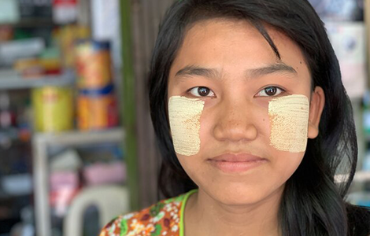

NATIONAL GEOGRAPHIC
In Myanmar, everyone swears by this natural skin cosmetic
HISTORY & CULTURE

- 
NEAR SHWEBO, MYANMARWhen did human beings first decorate their oldest canvas: the body?
It is impossible to say. The primordial evidence the hides of Stone Age peoples has long since turned to dust. Yet clues remain. A rouge-colored mineral called ocher has been discovered, finely ground and ready for application, inside a 100,000 year-old abalone shell in South Africa. Other archaeological finds suggest that cosmetic pigments were used by pre-human ancestors as long ago as a quarter of a million years. Vanity is very old, indeed.
Today in Myanmar, or Burma, this ancient human impulse for self-beautification remains on bold display everywhere. Women, men, and children of all backgrounds wear thanaka, a pale yellow paste made from pulverized tree bark that is painted artfully or daubed carelessly onto their faces.
Unlike modern industrial cosmetics, thanaka is not meant to be subtle, to hide flaws or accentuate features. It is a sun-bright symbol of health and beauty. It blazes on millions of cheeks and foreheads for all to see. Wizened old farmers in Myanmar slap on thanaka. Young clerks at urban boutiques draw stylized patterns across their skin with the paste. Children march to school with thanaka smeared, hastily, onto their faces by mothers.
“It makes the skin softer. It takes away pimples and rashes,” explained U Nyo, 55, a farmer whose property is dotted with thanaka trees, the source of the popular skin balm. “The wild trees are best, especially those planted by birds who eat the fruit. Cultivated trees lose their power.”
The first historical reference to thanaka appears in a poem from the court of King Rajadhirat, the 14th-century unifier of Burma. But the pigment’s use likely goes back much further. Today, the organic skin beautifier is so ubiquitous across Myanmar’s communities uddhists, Muslims, and smaller ethnic minorities hat it has become a symbol of Burmese culture on par with the longyi, the sarong-like national skirt worn by men and women alike.
“There is no comparison with modern makeup,” said Ma Tin Hla, 36, a thanaka seller in what might be called the champagne heartland of the natural pigment he hot, dry plains of central Myanmar, near the city of Mandalay. “Store-bought cosmetics actually destroy your complexion. Thanaka does the exact opposite. It repairs it.”
Like all regular users of the pigment, Ma Tin Hla ascribed powers to thanaka that extend far beyond simply prettying a face. The paste functions as a sunblock, she said. It combats wrinkles. It keeps mosquitoes away. And its antibiotic qualities, she added, serve to control acne hough a recent scientific study appears to discount this claim.
The raw material for thanaka comes from specific trees such as Naringi crenulata and Limonia acidissima, colloquially known as wood-apple, sandalwood, elephant apple, or curd fruit trees. The preparations are laborious.
The trees’ branches are sawed into hand-size segments on farms and in forests. Then, at markets, temples, roadside stalls, and in homes, the thin layer of bark is scraped away for hours on small slate grinding stones. The end product looks like dry corn flour. Reconstituted with water and applied with fingers and sticks, it dries to a light golden crust on the skin. Delicate leaf patterns are a common thanaka style among younger users.
“Anyone in the world can put on cheap lipstick,” said Han Ni, 26, a beautician who applied the pigment for tips at Kuthodaw pagoda, in Mandalay. “Only we know the beauty of thanaka.”
Comments :
- john Very good
- john Very good
Leave a Reply
Your email address will not be published. Required fields are marked*
Related posts:
-
 Everything to Know About Bangkok
Everything to Know About BangkokAmong golden temples and glitzy bars, Bangkok fuses its past with a vibrant present, with world-class cuisine and nightlife available for everyone—no matter your budget. Because of the rapid expansion in the 20th century
View article -
 Everything to Know About Dublin
Everything to Know About DublinThe last 20 years has seen the pint of plain rest easily beside a cappuccino as Dublin, Ireland, embraces an influx of different cultures and eclectic mix of restaurants, cafes, and bars. The birth of Chinatown and launch of new festivals, such as the Dublin Chinese New Year Festival and Fusions Sundays
View article -
 Everything to Know About London
Everything to Know About LondonLondon is a city of contrasts, where tastemakers, creatives, tech-preneurs, heroes, and hacks rub shoulders. Described as “an extraordinary city of extraordinary people” by British Prime Minister Theresa May, in London, icons of history, culture, and modernity sit side-by-side jostling for space.
View article